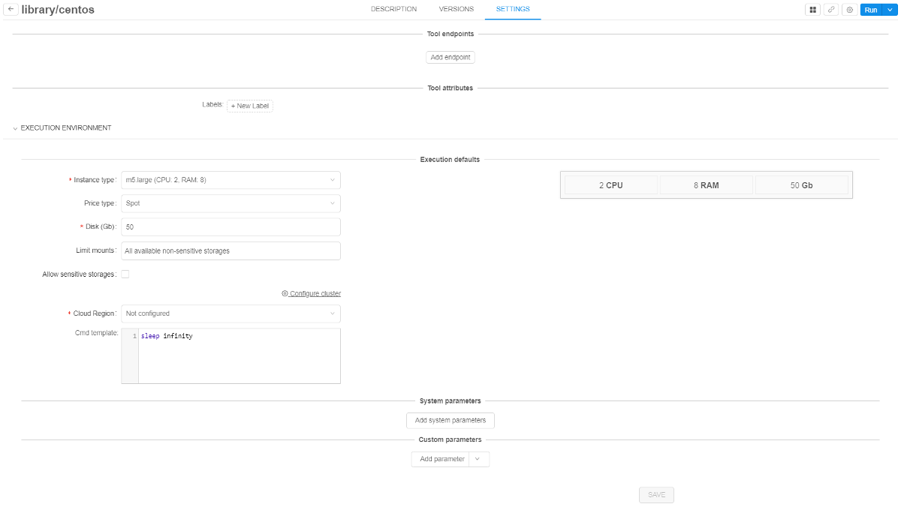

10. Manage Tools
For more information about Docker container lifecycle and EC2 instance lifecycle see Appendix A. EC2 Instance and Docker container lifecycles.
Overview
The Tools tab represents a list of available docker registries and docker images that contain tools. Using Docker images allows you to configure the same processing environment on each node regardless of the node type.
Every Tool object in the Cloud Pipeline is a representation of Docker image.
"Details" view pane
At the top of the page, you'll see the basic objects of the "Tools" space.
Registry
Click on the registry name to see a drop-down list of available Docker registries and choose one.
Tool group
Press under the arrow to see a list of available Tool groups or to search Tool group by the name. Only the lower-case alphanumeric string is allowed for a Tool group name.
Note: when you navigate to the Docker registry, the Tool group shown by default will be chosen based on the following conditions:
- If a user is included into some group (e.g. "cancer") and a Tool group with the same name exists, it will be shown by default. See more about user groups here.
- If the first condition isn't met, "library" group will be shown by default.
- If "library" group doesn't exist, "default" group will be shown by default.
- If the "default" group doesn't exist either, "personal" group will be shown.
- If none of the above groups doesn't exist/user doesn't have access to them, the first Tool group from the list will be shown by default.
Search field
This field helps to find a Tool by name in particular Tool group in a registry.
Show attributes/Hide attributes
Show attributes/Hide attributes opens the Attributes pane, where you can see and edit a list of key=value attributes of the tool group. See 17. CP objects tagging by additional attributes.
"Gear" icon
The following options are available:
| Option | Description |
|---|---|
| Registry | This button allows to create a new registry or Edit/Delete current. |
| Group | Allows creating new Tool group or Edit/Delete current. |
| + Enable Tool | Enables a Tool in a registry. |
| How to configure | Configures the Docker client to push/pull images to/from a registry. Note: Docker client needs to be installed. For installation instructions refer to https://docs.docker.com/install/. |
Personal Docker repository (Tool group)
All tools within such repository are named as <user_name>/<tool_name>.
Note: If a user loads a registry and there is no "personal" group in it, it shall be checked whether he has WRITE access to the registry.
- If No - do not display "personal" section (1) in the registry.
- If Yes - a user will see the message "Personal tool group was not found in registry" (2). On top of that, you'll see a suggestion to explore library Tool group.
See how to create personal Tool group here.
List of Tools
Tools list will be shown after you select group and registry.
Tool information page
Click on a Tool's name to open Tool information page. In the top right corner you can find the following buttons:
| Control | Description |
|---|---|
| "Displays" icon | This icon includes:
|
| "Gear" icon | Manage Tool permissions or delete a Tool. |
| Run | Run an instance with this Tool. |
Tool information page is divided into 3 tabs.
Description tab
This tab shows Tool description.
For registries with Pipeline authentication option, you'll also see the Docker pull command on this tab if you have READ access to a Tool.
Versions tab
Choose this tab to see a list of Tool versions.
About internal Tool version menu see 10.7. Tool version menu.
Each version has the following icons and controls:
| Control/Label | Description | |
|---|---|---|
| Name | Name of version | |
| Scanning status |
|
|
| Last successful scan: | The label shows if a version is successfully scanned at any time. The label contains date and time of the last successful attempt. | |
| Last scan date | The label shows if a version scanning is failed. The label contains date and time of the last scanning attempt. | |
| Colored bars | Hover over the colored bars to see scan status - a number of vulnerabilities grouped by severity (e.g. Critical, High, Medium, ...). | |
| Digest | The label shows unique identifier of docker image. | |
| Corresponding aliases | The label shows aliases of docker image (e.g. if some digest has more than one alias). | |
| Image size | The label shows the size of docker image. Note: this value is provided for the "gzipped" docker image. When pulled to the local workstation or the cloud instance - the size of the image will be greater. |
|
| Modified date | The label shows modified date of docker image. | |
| SCAN | Control forces the security scanning process. Available only for users with ROLE_ADMIN role. | |
| Run | Allow to run the particular Tool version with default settings or customize it. | |
| Delete | Delete the particular Tool version. |
In addition, the Version tab contains View unscanned version control. The control is visible if unscanned versions exist.
More about Security scan feature you could learn here.
Settings tab
Navigate to this tab to see Tool attributes and execution defaults.
- Endpoints - specify an endpoint for the service launched in a Tool.
- Labels - tool labels to briefly describe the Tool.
- Disk - instance disk size in Gb.
- Instance type - EC2 instance type. Contains information about an amount of CPU and RAM (in Gb).
- Default command - default command for Tool execution.

Navigate back to the Tools group page from the Tool description with the arrow button on the top-left corner.